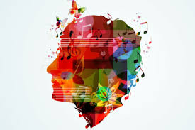

Neuroscience of Music
Music. A beautiful form of sound that brings various people together. Music reaches hearts like none other.
When you
unexpectedly meet somebody at a concert vibing to the same music as you, it stems feelings of closeness and
connection.
When people listen to their favourite songs together, something remarkable happens in the brain- “neural
responses
synchronize”. This synchronization known as “neural entertainment” is a key factor in why shared musical
activities
often lead to stronger social bonds.

Impact of Music on Healing
Growing evidence suggests, that listening to Mozart's Sonata for Two Pianos in D Major and can reduce the
frequency of
seizures in some people with epilepsy. So beautiful, isn’t it?
Other conditions and diseases, ranging from Parkinson’s to depression to Alzheimer’s, could someday have
therapeutic
solutions derived from an understanding of music. For instance, by identifying the exact type of music able
to provoke a
particular cognitive, motor, or emotional response, there could be progress toward healing, improving, or
compensating
for disrupted brain function in various diseases. An increased understanding of brain mechanisms can
facilitate this.
Impact of Music on Memory
Music can help retain essential information despite memory loss. Music memory is stored in the hippocampus,
centrally
located in the brain. Therefore, music memories are less likely to be negatively impacted by age or disease.
A musical mnemonic device is a natural way to memorize and recall information. As children, we learn various
academic
and social concepts through songs. Similarly, these memory strategies are highly effective for adults. In
fact, our
brains automatically “fill in the gaps” when a song suddenly stops.
Music therapists often incorporate these techniques with individuals to improve memory retention or
developmental
learning goals. Music may activate memories and remind us of places, events or people. A familiar tune may
elicit the
emotions associated with those memories.
Impact of Music on Metal Health
Music can provide comfort and solace during times of distress, allowing us to express our feelings without
having to put
them into words. Music can also be used as a tool for self-reflection, helping us gain insight into our own
experiences
and find meaning in difficult situations.
Music has been found to be particularly beneficial for those who are grieving or suffering from trauma or
PTSD
(post-traumatic stress disorder). Listening to certain types of music can evoke memories of happier times,
providing a
sense of hope and optimism even when faced with difficult circumstances.
Impact of Music on Behaviour
Have you found yourself singing or listening to your go-to songs while performing boring, tiresome and
tedious tasks?
This is mostly due to the fact that music can be a motivator, a time for completing tasks or a mood
enhancer. Music can
validate your current emotional state and influence your emotional destination.
Overall, music is a bewitching and elegant tool for self-expression, recognition and connection.
Our lives are all shaped by music and always will be.